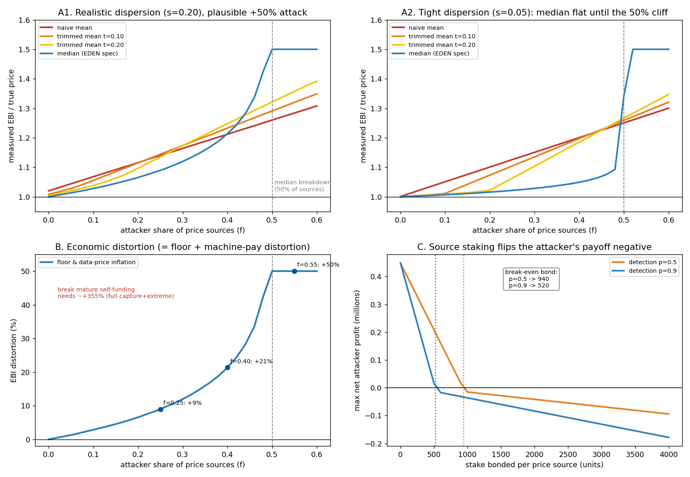

In plain language
Companion to RESULTS - Oracle (EBI) Manipulation. Companion added July 11, 2026 — the v1–v5-era runs predate the plain-language convention; written from the committed RESULTS as it stands today (including any verification-pass corrections already applied in that file), with no reinterpretation.
The question
The EBI — the Essentials Basket Index — is an outlier-trimmed on-chain median of merchant-posted prices, and it sets both the earnability floor (F = 1.10 × EBI) and machine-pay prices. Corrupt it and you corrupt the safety net and the data economy at the same time; the design itself flagged it as the softest attack surface. A median shrugs off a few liars by construction, so the sharp question is: as an attacker controls a growing share of price sources, when does the index break — especially now that AI makes manufacturing a plausible fake merchant network cheap?
What we found
A threshold, not a slope. The median's statistical breakdown point is 50% of sources — below that it resists, at that point it capitulates to whatever the attacker posts. But under realistic price dispersion (σ≈0.20), a sub-majority already moves it: 25% of sources buys +9% distortion, 40% buys +21%, and ~50% is full capture (→ +50%). A naive mean moves immediately and a trimmed mean breaks even earlier (at its trim fraction), so the median is the right estimator — and the security question reduces entirely to source authenticity.
The economic blast radius: the floor and every data price scale linearly with the EBI, so a +10–20% distortion is simply 10–20% inflation injected into both — defeating the governor's near-zero mandate long before anything structural breaks. Breaking the floor's self-funding is much harder (it would take roughly +355% EBI inflation — full capture plus extreme posted prices), so the realistic damage is inflation and value-transfer at sub-50% capture, not a self-funding break. At launch it's worse: the floor is already ~23% of issuance and externally subsidized, so EBI inflation raises the subsidy burden roughly 1:1 during exactly the fragile period. The mirror attack — deflating the EBI — collapses machine-pay so institutions buy everyone's data cheap: an attack on the data-dignity promise rather than the floor.
What actually defends it: not trimming (that only guards against a handful of wild outliers). Source staking with slashing is the real lever — bonding each source flips the attacker's payoff negative once the bond clears break-even, and stronger detection roughly halves the bond required (in model units, ≈940/source at 50% detection vs ≈520 at 90%). A move-rate cap (e.g., 2%/period) forces the index to crawl toward the attacker's target over ~10 visible periods — time for anomaly detection, slashing, and bridge circuit-breakers to act. Breadth, independence, and external cross-checks make a fake-source majority costlier and detectable.
The honest catch
Verdict: SURVIVES WITH CHANGES. The merchant-posted median alone is exploitable once AI makes plausible fake sources cheap; the buildable fix is staked + slashed + diverse + externally cross-checked sources plus a bounded index move-rate — and a funded public red-team of the oracle remains a launch gate. The model is stylized: honest prices are i.i.d. lognormal (real prices have regional structure), the attacker posts one coordinated value, and the staking figures are shape results, not dollar figures. The robust takeaways: breakdown is ~50% of sources, so security equals source authenticity; realistic dispersion lets a sub-majority distort the index 10–20%; and staking plus move-rate caps are the defenses that bite, not trimming.
One line
The price index EDEN's floor hangs on is statistically the best choice — a median that holds until an attacker controls ~50% of sources — but under realistic price spread a 25–40% minority already injects 9–21% inflation into the floor and every data price, so the verdict is SURVIVES WITH CHANGES: make each source expensive to fake (stake it, slash it, cross-check it) and cap how fast the index can move.
Words used here (added July 18, 2026 — plain-language house rule; the text above is unchanged). Oracle — the system's price-measuring instrument: the thermometer the economy reads prices from; corrupt it and everything indexed to it is corrupted. Median — the middle value of all posted prices — half sit above, half below — so a few liars can't move it. Outlier-trimmed — extreme readings are thrown away before taking that middle, so a single wild fake can't budge the number. Estimator — the recipe for squeezing one official number out of many readings; mean, trimmed mean, and median are rival recipes. Trimmed mean — an average taken after discarding the extremes; it breaks earlier than the median here. Dispersion (σ, sigma) — spread: how far typical honest prices wander from the middle; σ≈0.20 is the realistic scatter that gives a lying minority room to hide in. i.i.d. — every price draw independent, same dice each time — a simplification, since real prices move together regionally. Lognormal — a bell curve for things that can't go below zero and occasionally get huge; the assumed shape of honest prices. Staking / bonding — each price source posts a security deposit to participate. Slashing — losing that posted deposit when caught lying — the lever that flips the attack into a money-loser. On-chain — recorded on the shared public ledger, visible and checkable by anyone. Machine-pay — what AIs and institutions must pay people to use their data; deflating the index makes that data artificially cheap. Red-team — friendly attackers funded to break the oracle on purpose before real ones try. Issuance — all newly created money; "~23% of issuance" sizes the launch floor bill against it.
Figures

Technical results
Closes the item the Modeling Roadmap flagged as "the design's flagged softest attack surface" and left unbuilt. The EBI (Essentials Basket Index) is an outlier-trimmed on-chain median of merchant-posted prices — and it sets both the earnability floor (F = 1.10 × EBI) and machine-pay (PRICE = P_floor × C × F). So a manipulated EBI corrupts the safety net and the data economy at the same time. This run asks how far an attacker can move it, what that does economically, and which defenses actually bite. Files in this folder.
The framing (which is the whole point)
A trimmed median is chosen precisely because it's robust to a few liars. The right question is therefore not "can one bad merchant move the index?" (no) but: as an attacker controls a growing share of price sources, when does the index break — and what's it worth to break it? And in 2026 the sharp edge is that AI makes manufacturing a plausible fake merchant network cheap, so "share of sources an attacker can reach" is no longer naturally bounded by the cost of being a real business.
The result — a threshold, not a slope
A median's statistical breakdown point is 50% of sources. Below that it resists; at that point it capitulates. But how it resists depends on how dispersed honest prices are (essentials prices really do vary across merchants and regions). Under realistic dispersion (σ≈0.20), a sub-majority minority already moves it:
| Attacker share of price sources | EBI distortion (median, realistic dispersion) | What it means |
|---|---|---|
| 25% | +9% | 9% inflation in the floor and all data prices |
| 40% | +21% | 21% inflation; governor's ~0% mandate defeated |
| ~50% (breakdown) | → +50% | full capture — index = the attacker's posted lie |
| naive mean (no trim) | moves immediately, linearly | why trimming/median exist at all |
| trimmed mean, trim = t | breaks at f = t | heavier trim → robust to outliers but LOWER breakdown |
Two readings, both matching the design's intent and its risk:
- The median is the right estimator — it has the highest breakdown point (0.5) of the options, far better than a naive mean (breaks instantly) or a trimmed mean (breaks at its trim fraction). EDEN's spec is correct to use it.
- "Robust" still means robust up to a share of sources — so the security reduces to source authenticity. With tightly-curated/clustered sources the median is nearly flat until the 50% cliff; with realistic price dispersion a 25–40% source minority already distorts the index 9–21%. Either way the variable that matters is what share of sources an attacker can stand up, which is an economic question (cost per fake source), not a statistical one.
Economic blast radius
Because floor payout and machine-pay both scale linearly with EBI, the distortion is the economic damage:
- Inflate EBI → the floor (
1.10 × EBI) and every data price inflate by the same percent. A +10–20% distortion is simply 10–20% inflation injected into the floor and the data economy — it defeats the governor's near-zero inflation mandate long before it threatens anything structural. - Breaking the floor's self-funding is much harder than doing economic harm. Mature floor cost is ~2.2% of issuance against a 10% verification pool, so forcing inflationary top-up minting needs EBI inflation of roughly +355% — i.e., full capture (f > 0.5) and extreme posted prices. So the "self-funding never prints money" result is robust to the oracle; the realistic damage is inflation and value-transfer at sub-50% capture, not a self-funding break.
- At launch it's worse: the floor is already ~23% of issuance and externally subsidized, so EBI inflation raises the subsidy burden roughly 1:1 during exactly the period the network is most fragile.
- Deflate EBI (the mirror attack) → machine-pay collapses, so institutions buy everyone's data cheap and data income craters — an attack on the data-dignity promise rather than on the floor.
What actually defends it (and what doesn't)
- Outlier-trimming alone doesn't raise the bar — a median already has the 0.5 breakdown; trimming only guards against a handful of wild outliers, and a trimmed mean actually breaks earlier (at its trim fraction). Don't mistake trimming for the defense.
- Source staking/slashing is the real lever. Bonding each price source and slashing on detected manipulation flips the attacker's payoff negative once the bond clears a break-even level; stronger detection roughly halves the bond required (in model units, break-even ≈ 940/source at 50% detection vs ≈ 520 at 90%). This converts the attack from "cheap to manufacture sources" into "expensive to risk capital on each one" — directly attacking the source-share variable the median's breakdown exposes.
- A move-rate cap buys reaction time. Capping how fast the index may move (e.g., 2%/period) doesn't stop a determined attacker reaching the target level, but forces the index to crawl there over ~10 visible periods — time for anomaly detection, slashing, and bridge circuit-breakers to act.
- Breadth + independence + external cross-checks raise the cost and detectability of a fake-source majority (a synthetic merchant network that doesn't correlate with independent indices is detectable).
Verdict
SURVIVES WITH CHANGES, matching Red-Team finding #5. As specified — a merchant-posted trimmed median — the oracle is statistically sound but its security rests entirely on keeping the attacker's source share below ~50% (and, under realistic dispersion, well below it to hold inflation near zero). The merchant-posted median alone is exploitable once AI makes plausible fake sources cheap. The buildable fix is concrete: staked + slashed + diverse + externally-cross-checked sources, plus a bounded index move-rate. A funded public red-team of the oracle remains a launch gate (White Paper v1.1 §16).
Honest limits
A stylized model. Honest prices are i.i.d. lognormal — real essentials prices have regional structure and correlation the model omits; the attacker posts a single coordinated value rather than an optimized distribution; the prize, per-source creation cost, and detection probability in the staking study are illustrative units, so the break-even bond is a shape result ("a finite bond flips the sign, and detection lowers it"), not a dollar figure. Trimming is modeled as symmetric tail-trimming; EDEN's exact on-chain trimming rule may differ. The robust takeaways are the ones that don't depend on calibration: (1) the median's breakdown is ~50% of sources, so security = source authenticity; (2) realistic dispersion lets a sub-majority minority distort the index 10–20%; (3) staking + move-rate caps are the defenses that bite, not trimming. Audience: anyone reviewing the floor/oracle dependency, and the pilot's oracle red-team designers.
Files
oracle_manipulation_sim.py— estimators, the source-share sweep, the economic mapping, and the staking/move-rate defense modelfig_oracle_manipulation.png— four panels: robustness vs source-share (realistic & tight dispersion), economic distortion, and the staking defenseresults_oracle_manipulation.json— all figures and readouts
Raw data